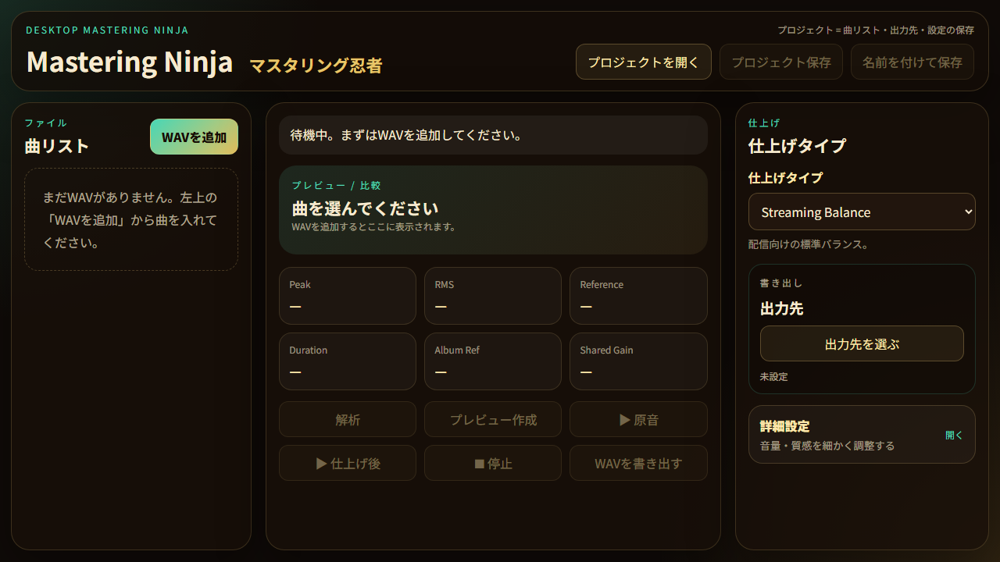

Mastering Ninja v0.1.0 · Windows Desktop App
できること
Key FeaturesWAVを読み込み
ローカルPC上のWAVファイルを追加して、曲ごとの解析・プレビュー・書き出しを行えます。
音量とピークを確認
Peak / RMS / Referenceなど、仕上げの目安になる数値を表示します。
A/Bプレビュー
原音と仕上げ後を切り替えて、耳で確認しながら作業できます。
仕上げタイプ
Streaming Balanceなどの仕上げタイプを選び、必要なら詳細設定で細かく調整できます。
プロジェクト保存
曲リスト・出力先・設定をプロジェクトファイルとして保存できます。
portable版
インストーラーなしで起動できるWindows用exeです。VSTプラグインではありません。
使い方と注意
Usage & Notes動作環境
- Windows 10 / 11 x64
- スタンドアロンアプリです。DAW用VSTプラグインではありません。
- v0.1.0ではWAV入力 / WAV出力を対象にしています。
起動方法
- ダウンロードした
MasteringNinja-0.1.0-Windows-x64.exeを実行します。 - インストール作業は不要です。
- Windowsの保護画面が出る場合は、内容を確認してから実行してください。
現在は個人制作の未署名exeです。環境によってはSmartScreenなどの警告が表示される場合があります。
基本操作
WAVを追加── 作業したい曲を読み込む解析── 音量やピークの目安を確認するプレビュー作成── 原音と仕上げ後を聴き比べる仕上げタイプ── 仕上げの方向性を選ぶ出力先を選ぶ── 書き出し先フォルダを指定するWAVを書き出す── 仕上げ後のWAVを出力する
使用上のメモ
- 重要な音源は、元ファイルを残したままコピーで試してください。
- v0.1.0 previewのため、音質や操作感は今後調整される可能性があります。
- 読み込んだ音声はローカルPC上で処理します。
利用条件
- Mastering Ninjaは無料で利用できます。
- 個人制作・商用制作の音源にも利用できます。
- 本ツールは無保証で提供されます。重要な制作データはバックアップを残してください。
Mastering Ninja v0.1.0 preview
Windows x64用 portable exe。WAVを読み、聴き比べ、書き出すための小さな作業台です。
⬇ Mastering Ninja をダウンロード